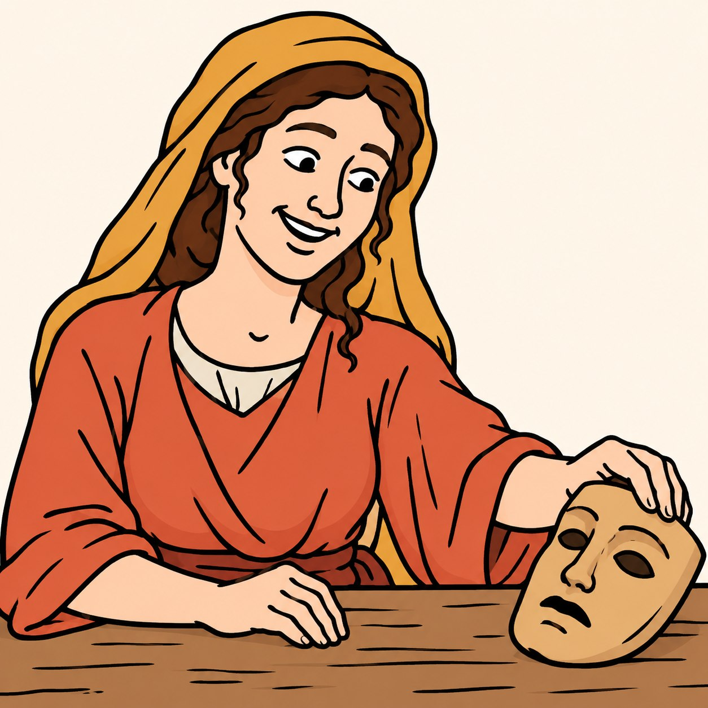
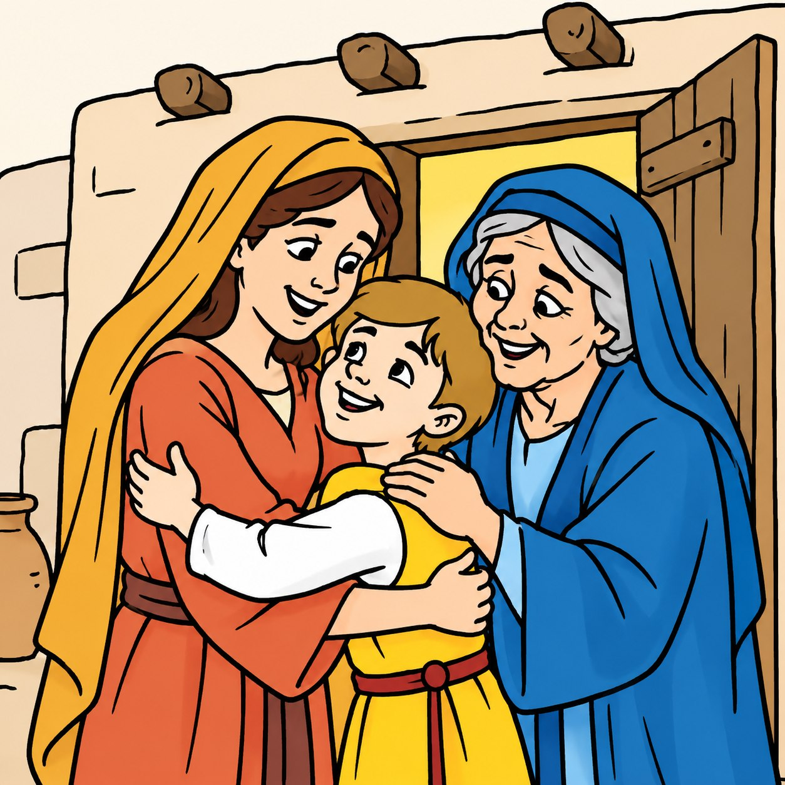
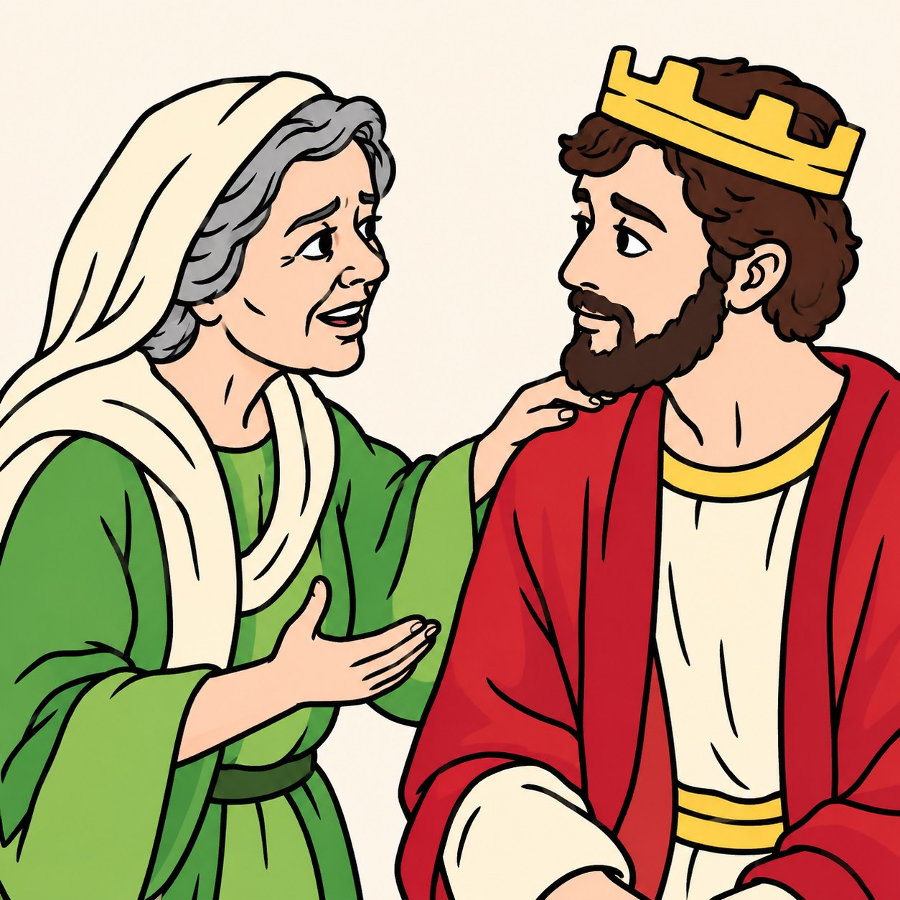
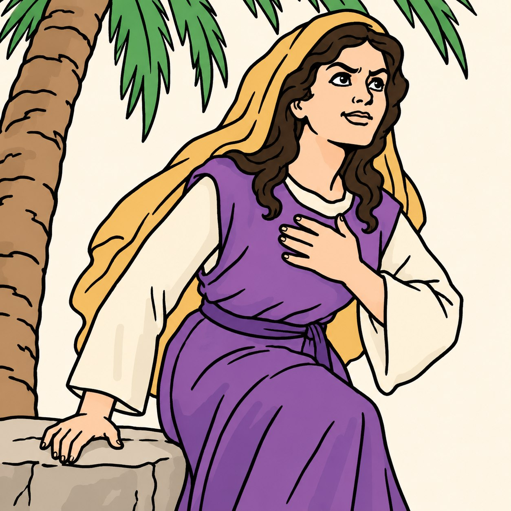
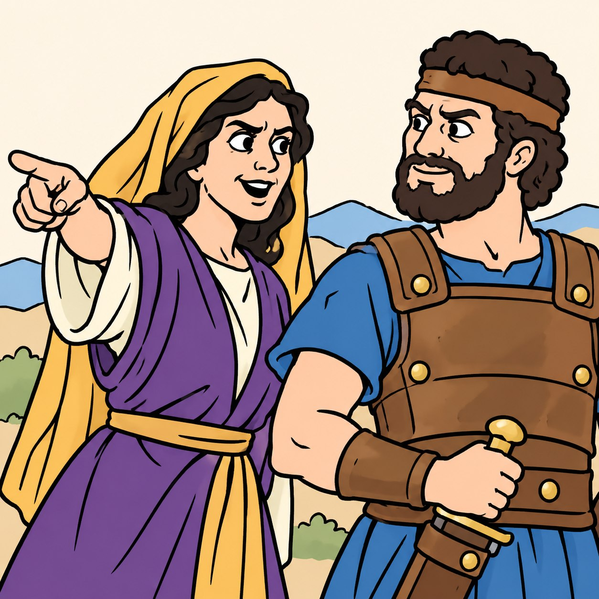

Día de la Madre
Madres
reformadoras
2 Timoteo 1:5
Lutero · 1529
La Reforma entró a las
casas
.
Reformar
Volver a darle la
forma original
que Dios le dio.
“…la fe no fingida… habitó primero en tu abuela
Loida
, y en tu madre
Eunice
…”
2 Timoteo 1:5
1
Madres reformadoras de
niños
1a · Una fe verdadera
“…la fe no
fingida
…”
2 Timoteo 1:5

1a · Una fe verdadera
“No
fingida
”
Sin máscara, sin actuación.

1a · Una fe verdadera
“
Habitó
”
Hizo casa. Vivió adentro.
1b · Una fe racional
“…desde la niñez has sabido las Sagradas
Escrituras
…”
2 Timoteo 3:15
1b · Una fe racional
“Desde la
niñez
”
Literalmente: desde bebé.
1b · Una fe racional
“Has
sabido
”
Un saber que ya es parte de él.
Hechos 16:1
“…pero de padre
griego
.”
¿Qué hubiera sido de Timoteo sin Loida y Eunice?
Para pensar
¿Nuestros hijos saben las
Escrituras
… o solo que vamos a la iglesia?
2
Madres reformadoras de
adultos
“Palabras del rey Lemuel; la profecía con que le
enseñó
su madre.”
Proverbios 31:1

Proverbios 31:1
“
Enseñó
”
Instruir, corregir, disciplinar.
“¿Qué, hijo mío? ¿y qué, hijo de mi
vientre
?”
Proverbios 31:2
2a · Enseña con verdad
“No des a las mujeres tu
fuerza
…”
Proverbios 31:3-5
2b · Enseña con propósito
“…defiende la causa del
pobre
y del menesteroso.”
Proverbios 31:8-9
Mónica y Agustín
“…no es posible que perezca el hijo de tantas
lágrimas
.”
Confesiones III.12
Para pensar
¿Seguimos dispuestos a
escuchar
… aun siendo grandes?
3
Madres reformadoras de
naciones
“…hasta que yo Débora me levanté, me levanté como
madre en Israel
.”
Jueces 5:7
3a · Se levanta
“Cuando escogían nuevos
dioses
…”
Jueces 5:8

3a · Se levanta
“Me
levanté
”
Lo repite dos veces. No esperó a otro.

3b · Levanta a otros
“
Levántate
… ¿No ha salido Jehová delante de ti?”
Jueces 4:14
3b · Levanta a otros
“…y la tierra reposó cuarenta
años
.”
Jueces 5:31
Para pensar
¿Nos estamos
acomodando
mientras nuestra generación escoge nuevos dioses?
Loida · Lemuel · Débora
La reforma empieza cuando la Palabra hace
casa
en una mujer.
Que la fe
no fingida
habite en nuestra casa.
2 Timoteo 1:5